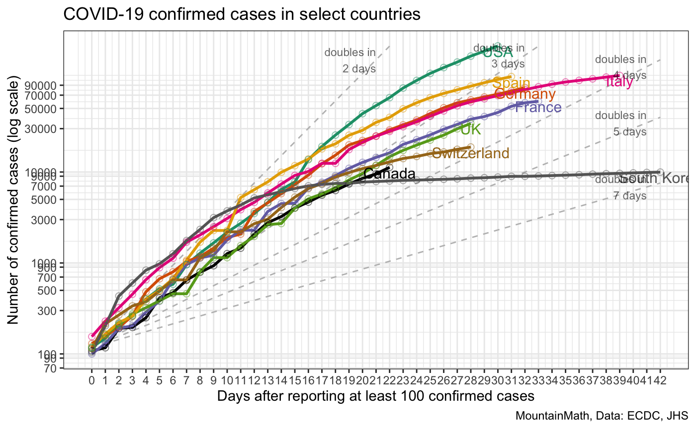
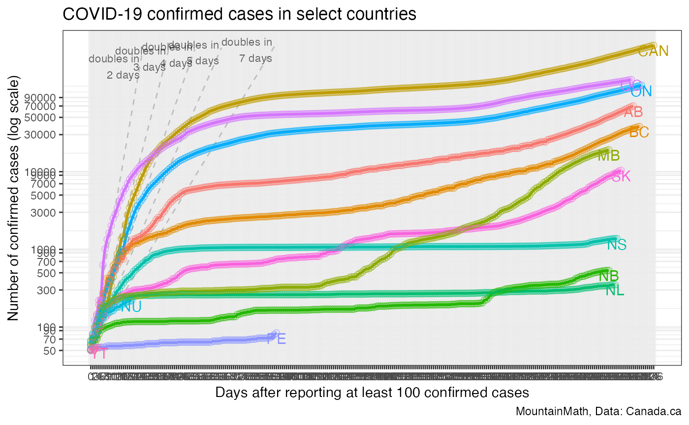

Rolling growth rates
Jens von Bergmann
Source:vignettes/rolling_growth_rates.Rmd
rolling_growth_rates.Rmdlibrary(CanCovidData)
library(dplyr)
#>
#> Attaching package: 'dplyr'
#> The following objects are masked from 'package:stats':
#>
#> filter, lag
#> The following objects are masked from 'package:base':
#>
#> intersect, setdiff, setequal, union
library(ggplot2)case_text_lookup <- c(
"Confirmed" = "confirmed cases",
"Deaths" = "deaths",
"Active" = "active confirmed cases"
)
country_base_colours <- setNames(c("black",RColorBrewer::brewer.pal(8,"Dark2")),
c("Canada",
"USA",
"Germany",
"France",
"Italy",
"UK",
"Spain",
"Switzerland",
"South Korea"))start_cutoff <- 100
window_width <- 7
metric <- "Confirmed"
case_text <- case_text_lookup[metric]
country_data %>%
filter(Country %in% names(country_base_colours)) %>%
mutate(total=!!as.name(metric)) %>%
mutate(region=Country) %>%
add_days_since(start_cutoff) %>%
filter(d>=0) %>%
growth_rate_graph(window_width) +
scale_color_manual(values=country_base_colours) +
labs(title=paste0("Countries COVID-19 ",case_text," growth rate"),
color="Country",
x=paste0("Days after ",start_cutoff," ",case_text," in rolling window"),
caption="MountainMath, Data ECDC, JHS") 
start_cutoff=100
metric="Confirmed"
case_text <- case_text_lookup[metric]
country_data %>%
filter(Country %in% names(country_base_colours)) %>%
mutate(region=factor(Country,levels=names(country_base_colours))) %>%
mutate(total=!!as.name(metric)) %>%
add_days_since(start_cutoff) %>%
filter(d>=0) %>%
group_by(region) %>%
filter(max(d)>2) %>%
total_graph() +
scale_color_manual(values=country_base_colours,guide=FALSE) +
labs(title=paste0("COVID-19 ",case_text," in select countries"),
x=paste0("Days after reporting at least ",start_cutoff," ",case_text),
y=paste0("Number of ",case_text," (log scale)"),
caption="MountainMath, Data: ECDC, JHS") 
provincial_data <- get_canada_official_provincial_data()
#> Parsed with column specification:
#> cols(
#> pruid = col_double(),
#> prname = col_character(),
#> prnameFR = col_character(),
#> date = col_character(),
#> numconf = col_double(),
#> numprob = col_double(),
#> numdeaths = col_double(),
#> numtotal = col_double(),
#> numtoday = col_double(),
#> percentoday = col_double(),
#> numtested = col_logical()
#> )
provincial_data %>%
mutate(total=!!as.name(metric)) %>%
mutate(region=shortProvince) %>%
add_days_since(50) %>%
filter(d>=0) %>%
group_by(region) %>%
filter(max(d)>2) %>%
total_graph() +
scale_color_discrete(guide=FALSE) +
#scale_color_manual(values=country_base_colours,guide=FALSE) +
labs(title=paste0("COVID-19 ",case_text," in select countries"),
colour=NULL,
x=paste0("Days after reporting at least ",start_cutoff," ",case_text),
y=paste0("Number of ",case_text," (log scale)"),
caption="MountainMath, Data: Canada.ca") 